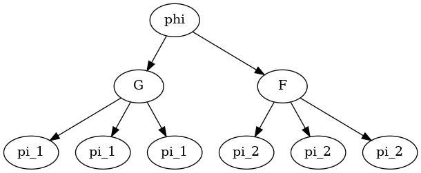

Defining STL Formulas¶
As described here, STL formulas \(\varphi\) are defined recursively accoring to the STL syntax:
We represent STL formulas \(\varphi\) using the abstract base class STLFormula. This
base class enables all of the basic STL operations like conjuction (\(\land\)), disjuction
(\(\lor\)), always (\(G\)), until (\(U\)), and so on.
Internally, we represent predicates \(\pi\) using the STLPredicate class and all
other formulas using the class STLTree.
Warning
For now, only formulas in positive normal form are supported. That means that negation
(\(\lnot\)) can only be applied to predicates (STLPredicate). Note that
any STL formula can be re-written in positive normal form.
STLFormula¶
-
class
pySTL.STL.STLFormula¶ Bases:
abc.ABCAn abstract class which encompasses represents all kinds of STL formulas \(\varphi\), including predicates (the simplest possible formulas) and standard formulas (made up of logical operations over predicates and other formulas).
-
always(t1, t2)¶ Return a new
STLTree\(\varphi_{new}\) which ensures that this formula (\(\varphi\)) holds for all of the timesteps between \(t_1\) and \(t_2\):\[\varphi_{new} = G_{[t_1,t_2]}(\varphi)\]Parameters: - t1 – An integer representing the delay \(t_1\)
- t2 – An integer representing the deadline \(t_2\)
Returns: An
STLTreerepresenting \(\varphi_{new}\)
-
conjunction(other)¶ Return a new
STLTree\(\varphi_{new}\) which represents the conjunction (and) of this formula (\(\varphi\)) and another one (\(\varphi_{other}\)):\[\varphi_{new} = \varphi \land \varphi_{other}\]Parameters: other – The STLFormula\(\varphi_{other}\)Returns: An STLTreerepresenting \(\varphi_{new}\)Note
Conjuction can also be represented with the
&operator, i.e.,c = a & b
is equivalent to
c = a.conjuction(b)
-
disjunction(other)¶ Return a new
STLTree\(\varphi_{new}\) which represents the disjunction (or) of this formula (\(\varphi\)) and another one (\(\varphi_{other}\)):\[\varphi_{new} = \varphi \lor \varphi_{other}\]Parameters: other – The STLFormula\(\varphi_{other}\)Returns: An STLTreerepresenting \(\varphi_{new}\)Note
Disjunction can also be represented with the
|operator, i.e.,c = a | b
is equivalent to
c = a.disjunction(b)
-
eventually(t1, t2)¶ Return a new
STLTree\(\varphi_{new}\) which ensures that this formula (\(\varphi\)) holds for at least one timestep between \(t_1\) and \(t_2\):\[\varphi_{new} = F_{[t_1,t_2]}(\varphi)\]Parameters: - t1 – An integer representing the delay \(t_1\)
- t2 – An integer representing the deadline \(t_2\)
Returns: An
STLTreerepresenting \(\varphi_{new}\)
-
get_all_conjunctive_state_formulas()¶ Return a list of all of the (unique) conjunctive state formulas that make up this specification.
Returns: A list of STLFormula objects
-
get_all_inequalities()¶ Return all inequalities associated with this formula stacked into vector form
\[A*y <= b\]where each row of \(A\) and \(b\) correspond to a predicate in this formula.
Note
This method is really only useful for conjunctive state formulas.
Return A: An (n,m) numpy array representing \(A\) Return b: An (n,) numpy array representing \(b\)
-
is_conjunctive_state_formula()¶ Indicate whether this formula is a state formula defined by only conjunctions (and) over predicates.
Returns: A boolean which is Trueonly if this is a conjunctive state formula.
-
is_disjunctive_state_formula()¶ Indicate whether this formula is a state formula defined by only disjunctions (or) over predicates.
Returns: A boolean which is Trueonly if this is a disjunctive state formula.
-
is_predicate()¶ Indicate whether this formula is a predicate.
Returns: A boolean which is Trueonly if this is a predicate.
-
is_state_formula()¶ Indicate whether this formula is a state formula, e.g., a predicate or the result of boolean operations over predicates.
Returns: A boolean which is Trueonly if this is a state formula.
-
negation()¶ Return a new
STLFormula\(\varphi_{new}\) which represents the negation of this formula:\[\varphi_{new} = \lnot \varphi\]Returns: An STLFormularepresenting \(\varphi_{new}\)Note
For now, only formulas in positive normal form are supported. That means that negation (\(\lnot\)) can only be applied to predicates (\(\pi\)).
-
robustness(y, t)¶ Compute the robustness measure \(\rho^\varphi(y,t)\) of this formula for the given signal \(y = y_0,y_1,\dots,y_T\), evaluated at timestep \(t\).
Parameters: - y – A
(d,T)numpy array representing the signal to evaluate, wheredis the dimension of the signal andTis the number of timesteps - t – The timestep \(t\) to evaluate the signal at. This is typically 0 for the full formula.
Returns: The robustness measure \(\rho^\varphi(y,t)\) which is positive only if the signal satisfies the specification.
- y – A
-
until(other, t1, t2)¶ Return a new
STLTree\(\varphi_{new}\) which ensures that the given formula \(\varphi_{other}\) holds for at least one timestep between \(t_1\) and \(t_2\), and that this formula (\(\varphi\)) holds at all timesteps until then:\[\varphi_{new} = \varphi U_{[t_1,t_2]}(\varphi_{other})\]Parameters: - other – A
STLFormularepresenting \(\varphi_{other\) - t1 – An integer representing the delay \(t_1\)
- t2 – An integer representing the deadline \(t_2\)
Returns: An
STLTreerepresenting \(\varphi_{new}\)- other – A
-
STLTree¶
-
class
pySTL.STL.STLTree(subformula_list, combination_type, timesteps, name=None)¶ Bases:
pySTL.STL.formula.STLFormulaDescribes an STL formula \(\varphi\) which is made up of operations over
STLFormulaobjects. This defines a tree structure, so that, for example, the specification\[\varphi = G_{[0,3]} \pi_1 \land F_{[0,3]} \pi_2\]is represented by the tree
where each node is an
STLFormulaand the leaf nodes areSTLPredicateobjects.Each
STLTreeis defined by a list ofSTLFormulaobjects (the child nodes in the tree) which are combined together using either conjunction or disjunction.Parameters: - subformula_list – A list of
STLFormulaobjects (formulas or predicates) that we’ll use to construct this formula. - combination_type – A string representing the type of operation we’ll use
to combine the child nodes. Must be either
"and"or"or". - timesteps – A list of timesteps that the subformulas must hold at. This is needed to define the temporal operators.
- subformula_list – A list of
STLPredicate¶
-
class
pySTL.STL.STLPredicate(a, b, name=None)¶ Bases:
pySTL.STL.formula.STLFormulaA (linear) STL predicate \(\pi\) defined by
\[a^Ty_t - b \geq 0\]where \(y_t \in \mathbb{R}^d\) is the value of the signal at a given timestep \(t\), \(a \in \mathbb{R}^d\), and \(b \in \mathbb{R}\).
Parameters: - a – a numpy array or list representing the vector \(a\)
- b – a list, numpy array, or scalar representing \(b\)